Batch Normalisation Ablation: Paired Tensor Training
Abstract
A change to a CNN layer can appear useful simply because the two runs started with different weights or saw different minibatches. We compare a plain MNIST CNN with its batch-normalised counterpart using matched kernel values, seeds and row orders. Every Adam update and validation selection remains visible, including the non-trained moving-statistics state.
Source example: examples/cpp/source/nn/1_convolutional_neural_networks/1.1_fundamentals/batch_norm_ablation.cpp.
The method
Training normalises each channel over batch and spatial axes, then applies learned gamma and beta before ReLU. Inference uses moving statistics instead of the current batch. With momentum m=.9, the state update is mean←m mean+(1-m) batch_mean and similarly for variance; the library stores the unbiased batch variance in that moving variance, while normalisation uses population variance. Epsilon .001 stabilises the denominator.
The two models retain identical convolution biases, kernel L2 and dense layers. BN adds 2(16+32)=96 trainable scalars, plus 96 moving-state scalars that Adam does not update. Three paired seeds provide descriptive differences rather than a general advantage claim. Each model fits the same 12,000 MNIST rows for six epochs. A separate 3,000-row validation set selects each checkpoint by NLL, and the 10,000 official test rows evaluate it. Normalisation costs O(BHWC) per layer, and its training output depends on batch companions. Inference must neither change state nor depend on unrelated companion images.
The concept diagram below is drawn by dm::graphics::Diagram. Its editable C++
source is the complete block below; regeneration uses the same datamunge toolchain
as the numerical examples. Exports consume the saved local SVG.
#include <dm/dm.hpp>
int main() {
std::filesystem::create_directories("build");
dm::graphics::Diagram diagram;
diagram.node("n0", {0.0, 0}, "Paired starting kernels\nsame minibatch order");
diagram.node("n1", {5.2, 0}, "Conv, optional BN, ReLU\nseparate moving state");
diagram.node("n2", {10.4, 0}, "Explicit Adam loops\nvalidation-selected pairs");
diagram.edge("n0", "n1").edge("n1", "n2");
diagram.save_svg("build/batch_norm_ablation_concept.svg");
}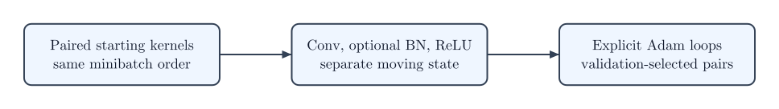
Simple examples
Two observations have channel means (2,3), population variances (1,1) and unbiased variances (2,2). One .9-momentum update yields moving means (.2,.3) and variances (1.1,1.1).
Executed architecture diagram
The diagram below is generated by this model's forward function through
nn::Module::plot. Each style runs a zero-valued shape probe in inference mode;
it does not fit parameters or load a trained checkpoint. Shapes include the
example batch, and learned-value counts deduplicate shared tensors. The flow and LeNet views use named composite blocks; the graph view shows
functional layers and their actual branches. ModelPlotDetail::Operations
expands both into tensor primitives.
All views run left to right with node labels rotated 90 degrees counterclockwise.
Colors identify layer categories and are explained by the legend. The settings below
control fill/edge opacity, category colors, column/lane spacing, label content, font
size and wrapping. Flow labels show full layer metadata; graph and LeNet labels show
names and exact shapes. All three views use shared linear shape scales: face axes
follow spatial dimensions, depth follows channel count, and vector height follows
feature count. Batch size is excluded from geometry. A one-pixel visibility floor
keeps very small dimensions visible; it is disclosed in each figure. The scales can
instead use SquareRoot or Logarithmic compression explicitly. LeNet sheet counts
and graph neuron markers are bounded samples; their envelopes follow the shape scales.
Graph neuron bundles are drawn only for actual dense connections. Dots mark omitted
units. Wide diagrams can be scrolled at native size on the website.
Arrows follow the executed differentiable path; constants and deliberately
detached paths are not expanded. The visual conventions are inspired by
[VisualTorch's examples](https://visualtorch.readthedocs.io/en/latest/usage_examples/index.html).
#include <dm/dm.hpp>
int main() {
namespace n = dm::nn;
n::set_num_threads(2);
std::filesystem::create_directories("build");
n::ParameterStore plain(17), normalized(17), state(17);
n::Module model(
[&](const n::Tensor& image) {
const auto run = [&](n::ParameterStore& weights, bool bn) {
auto h = image;
for (int block = 0; block < 2; ++block) {
h = n::conv2d(weights, "conv" + std::to_string(block + 1), h, block == 0 ? 16 : 32, 3);
if (bn)
h = n::batch_norm(
weights,
state,
"bn" + std::to_string(block + 1),
h,
false,
{.momentum = .9, .eps = .001});
h = n::max_pool2d(n::relu(h), 2, 2);
}
h = n::dense(weights, "dense", h.reshape({-1, 7 * 7 * 32}), 64, n::Activation::Relu);
return n::dense(weights, "output", h, 10);
};
const auto a = run(plain, false), b = run(normalized, true);
return n::concat({a, b}, 1);
},
"MNIST CNN: plain and batch-normalized");
for (const auto style :
{n::ModelPlotStyle::Graph, n::ModelPlotStyle::LeNet, n::ModelPlotStyle::Flow}) {
n::ModelPlotOptions options;
options.style = style;
options.opacity = .8;
options.edge_opacity = .55;
options.funnel_opacity = .08;
options.colors.convolution = "#64B5CD";
options.colors.pooling = "#5ABF9A";
options.colors.dense = "#748BCB";
options.spacing.layer = 48;
options.spacing.lane = 48;
options.labels.type = style == n::ModelPlotStyle::Flow ? n::ModelPlotLabel::Full
: n::ModelPlotLabel::NameAndShape;
options.labels.size = 13;
options.labels.wrap = 28;
options.sizing.spatial_scale = n::ModelPlotScale::Linear;
options.sizing.channel_scale = n::ModelPlotScale::Linear;
options.sizing.spatial_size = 144;
options.sizing.channel_size = 64;
options.sizing.minimum_extent = 1;
options.sizing.max_planes = 6;
options.detail =
style == n::ModelPlotStyle::Graph ? n::ModelPlotDetail::Layers : n::ModelPlotDetail::Blocks;
const auto diagram = model.plot(n::zeros({1, 28, 28, 1}), options);
if (diagram.parameter_count() != plain.count() + normalized.count())
return 1;
std::string output = "build/batch_norm_ablation_architecture.svg";
if (style != n::ModelPlotStyle::Flow)
output.insert(output.size() - 4, style == n::ModelPlotStyle::Graph ? "_graph" : "_lenet");
diagram.save_svg(output);
const auto label = style == n::ModelPlotStyle::Graph ? "Graph / layers"
: style == n::ModelPlotStyle::LeNet ? "LeNet / blocks"
: "Flow / blocks";
std::print(
"{}: {} nodes, {} distinct learned values.\n",
label,
diagram.nodes().size(),
diagram.parameter_count());
}
}Graph / layers: 23 nodes, 211828 distinct learned values. LeNet / blocks: 23 nodes, 211828 distinct learned values. Flow / blocks: 23 nodes, 211828 distinct learned values.
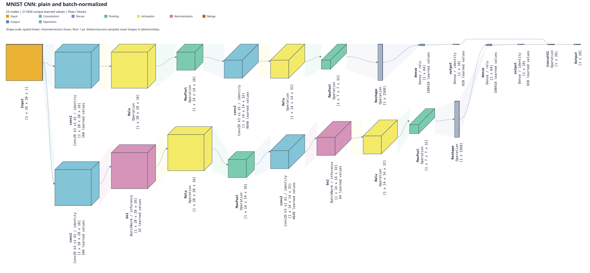
Graph and LeNet views
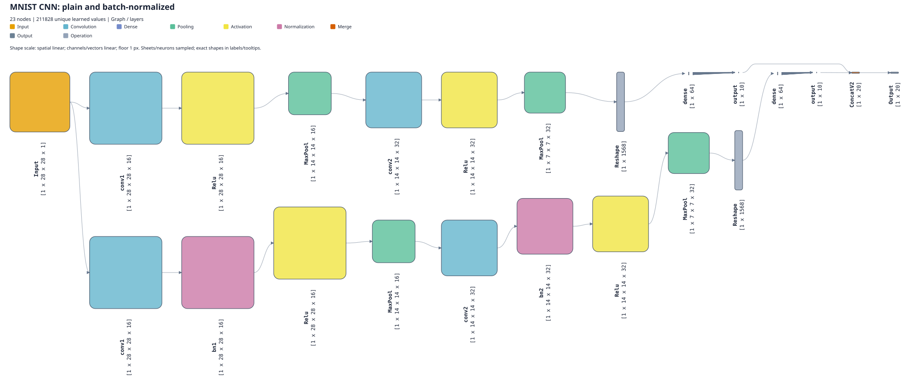
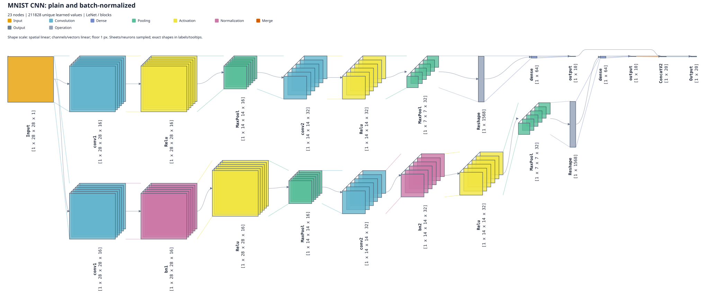
#include <dm/dm.hpp>
int main() {
namespace n = dm::nn;
n::ParameterStore p(17, n::DType::Float64), state(0, n::DType::Float64);
n::BatchNormOptions options;
options.momentum = .9;
options.eps = .001;
const auto x = n::tensor({1, 2, 3, 4}, {2, 1, 1, 2}, n::DType::Float64);
const auto y = n::batch_norm(p, state, "bn", x, true, options);
const auto mean = state.at("bn/moving_mean"), variance = state.at("bn/moving_var");
if (n::max(n::abs(mean - n::tensor({.2, .3}, {2}, n::DType::Float64))).item() > 1e-12 ||
n::max(n::abs(variance - 1.1)).item() > 1e-12)
return 1;
const auto snapshot = state.clone();
const auto alone = n::batch_norm(p, state, "bn", n::take_rows(x, {0}), false, options);
const auto together = n::take_rows(n::batch_norm(p, state, "bn", x, false, options), {0});
if (n::max(n::abs(alone - together)).item() > 1e-12)
return 1;
for (const auto &name : state.names())
if (n::max(n::abs(state.at(name) - snapshot.at(name))).item() != 0)
return 1;
std::print("Moving means {}; moving variances {}; inference companion discrepancy {:.12f}; "
"state unchanged.\n",
mean.to_vector<double>(), variance.to_vector<double>(),
n::max(n::abs(alone - together)).item());
}Moving means [0.19999999999999996, 0.29999999999999993]; moving variances [1.1, 1.1]; inference companion discrepancy 0.000000000000; state unchanged.
A dataset example
Original MNIST input examples are shown before the paired fits.
#include <dm/dm.hpp>
int main() {
namespace n = dm::nn;
std::filesystem::path cache;
if (const auto *p = std::getenv("DATAMUNGE_DATA_DIR"))
cache = p;
else if (const auto *p = std::getenv("XDG_CACHE_HOME"))
cache = std::filesystem::path(p) / "datamunge/datasets";
else
cache = std::filesystem::path(std::getenv("HOME")) / ".cache/datamunge/datasets";
dm::datasets::fetch("mnist", (cache / "mnist").string());
const auto data = n::load_mnist((cache / "mnist").string(), "train");
const auto images = data.images, labels = data.labels;
std::vector<int64_t> rows;
for (int cls = 0; cls < 10; ++cls) {
for (int64_t row = 0; row < labels.numel(); ++row)
if (labels.at({row}) == cls) {
rows.push_back(row);
break;
}
}
if (rows.size() != 10)
return 1;
std::filesystem::create_directories("build");
n::plot_tensor_images(n::take_rows(images, rows), 5)
.title("MNIST: one original 28 by 28 image per digit")
.size(1000, 530)
.save_svg("build/batch_norm_ablation_inputs.svg");
std::print("One original cached training image per class, IDs 0..4 then 5..9.\n");
}One original cached training image per class, IDs 0..4 then 5..9.
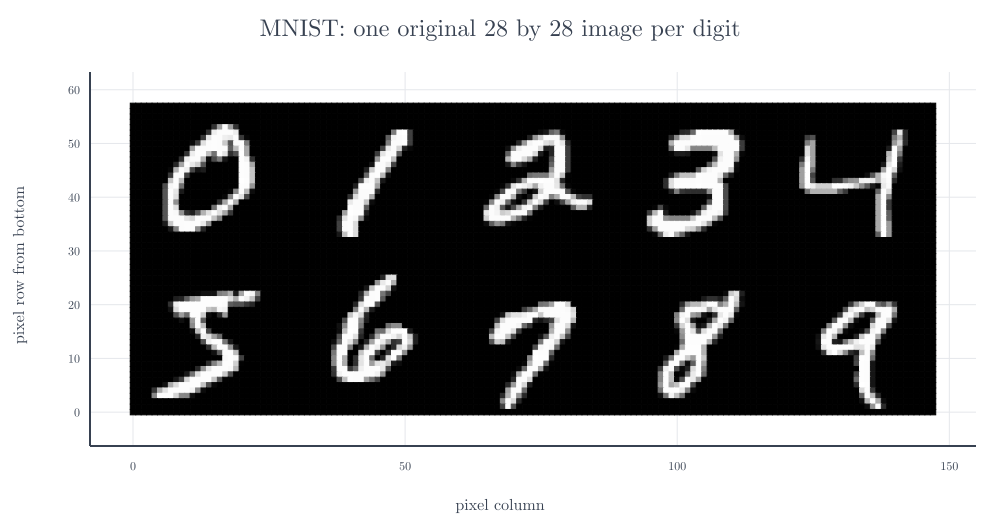
#include <dm/dm.hpp>
int main() {
namespace n = dm::nn;
n::set_num_threads(2);
std::filesystem::path cache;
if (const auto *p = std::getenv("DATAMUNGE_DATA_DIR"))
cache = p;
else if (const auto *p = std::getenv("XDG_CACHE_HOME"))
cache = std::filesystem::path(p) / "datamunge/datasets";
else
cache = std::filesystem::path(std::getenv("HOME")) / ".cache/datamunge/datasets";
dm::datasets::fetch("mnist", (cache / "mnist").string());
const auto data = n::load_mnist((cache / "mnist").string(), "train"),
test = n::load_mnist((cache / "mnist").string(), "test");
if (data.images.shape() != n::Shape{60000, 28, 28, 1} ||
test.images.shape() != n::Shape{10000, 28, 28, 1})
throw std::runtime_error("Expected original MNIST splits");
std::vector<std::int64_t> order(60000);
std::iota(order.begin(), order.end(), 0);
std::mt19937_64 split(2026);
std::shuffle(order.begin(), order.end(), split);
const std::vector<std::int64_t> fit(order.begin(), order.begin() + 12000);
const std::vector<std::int64_t> validation(order.begin() + 12000, order.begin() + 15000);
const auto tx = n::take_rows(data.images, fit), ty = n::take_rows(data.labels, fit);
const auto vx = n::take_rows(data.images, validation), vy = n::take_rows(data.labels, validation);
const auto qx = test.images, qy = test.labels;
auto logits = [](n::ParameterStore &p, n::ParameterStore &state, const n::Tensor &x, bool bn,
bool training) {
n::BatchNormOptions options;
options.momentum = .9;
options.eps = .001;
auto h = x;
for (int block = 0; block < 2; ++block) {
h = n::conv2d(p, "conv" + std::to_string(block + 1), h, block == 0 ? 16 : 32, 3);
if (bn)
h = n::batch_norm(p, state, "bn" + std::to_string(block + 1), h, training, options);
h = n::max_pool2d(n::relu(h), 2, 2);
}
h = n::dense(p, "dense", h.reshape({-1, 7 * 7 * 32}), 64, n::Activation::Relu);
return n::dense(p, "output", h, 10);
};
std::filesystem::create_directories("build");
std::vector<double> seeds, plain_accuracy, bn_accuracy, difference;
const std::array<dm::graphics::RGBA, 6> colors{
{{37, 99, 235}, {185, 28, 28}, {15, 118, 110}, {194, 65, 12}, {109, 40, 217}, {161, 98, 7}}};
auto learning = dm::graphics::RPlot::create();
std::size_t color = 0;
for (int seed : {11, 23, 47}) {
n::ParameterStore plain(seed), bn(seed), plain_state(0), bn_state(0);
{
n::NoGradGuard guard;
logits(plain, plain_state, n::zeros({1, 28, 28, 1}), false, false);
logits(bn, bn_state, n::zeros({1, 28, 28, 1}), true, false);
for (const auto &name : plain.names()) {
bn.at(name).copy_(plain.at(name));
if (n::max(n::abs(bn.at(name) - plain.at(name))).item() != 0.)
throw std::runtime_error("Mismatched initial paired weights");
}
}
double scores[2]{};
for (int variant = 0; variant < 2; ++variant) {
auto &p = variant ? bn : plain;
auto &state = variant ? bn_state : plain_state;
n::OptimizerConfig config;
config.kind = n::OptimizerKind::Adam;
n::Optimizer optimizer(p, .001, config);
n::BatchOrder batches(12000, 128, seed + 1000);
const std::string prefix =
"build/bn_pair_" + std::to_string(seed) + "_" + std::to_string(variant);
double best = std::numeric_limits<double>::infinity();
auto predict = [&](n::ParameterStore ¶meters, n::ParameterStore &statistics,
const n::Tensor &input) {
n::NoGradGuard guard;
std::vector<n::Tensor> parts;
for (std::int64_t at = 0; at < input.size(0); at += 256)
parts.push_back(logits(parameters, statistics,
n::slice_axis(input, 0, at, std::min(at + 256, input.size(0))),
variant, false));
return n::concat(parts, 0);
};
std::vector<double> nll_history;
for (int epoch = 0; epoch < 6; ++epoch) {
batches.begin_epoch();
std::size_t used = 0;
for (auto rows = batches.next(); !rows.empty(); rows = batches.next()) {
used += rows.size();
const auto z = logits(p, state, n::take_rows(tx, rows), variant, true);
auto loss = n::sparse_softmax_cross_entropy(z, n::take_rows(ty, rows));
for (const auto &w : p.parameters())
if (w.dim() >= 2)
loss = loss + .00005 * n::sum(n::square(w));
optimizer.minimize(loss);
}
if (used != fit.size())
throw std::runtime_error("Incomplete fitting epoch");
const double validation_nll =
n::sparse_softmax_cross_entropy(predict(p, state, vx), vy).item();
nll_history.push_back(validation_nll);
if (validation_nll < best) {
best = validation_nll;
p.save(prefix + "_params.npz");
if (variant)
state.save(prefix + "_state.npz");
}
}
learning.lines({1, 2, 3, 4, 5, 6}, nll_history,
std::format("{} {}", seed, variant ? "BN" : "plain"), colors[color++]);
p.load(prefix + "_params.npz");
if (variant)
state.load(prefix + "_state.npz");
n::NoGradGuard guard;
const auto snapshot = state.clone();
const auto restored_nll = n::sparse_softmax_cross_entropy(predict(p, state, vx), vy).item();
if (!std::isfinite(restored_nll) || std::abs(restored_nll - best) > 1e-6)
throw std::runtime_error("Restored validation NLL differs");
const auto z = predict(p, state, qx);
const std::string confusion_file = "build/batch_norm_ablation_" + std::to_string(seed) +
(variant ? "_bn" : "_plain") + "_confusion";
n::ConfusionMatrix cm(10);
cm.add(qy, n::argmax(z, 1));
cm.save_svg(confusion_file + ".svg", {.title = "Paired MNIST seed " + std::to_string(seed) +
(variant ? " / BN" : " / plain")});
n::save_npz(confusion_file + ".npz",
{{"truth", qy}, {"logits", z}, {"counts", cm.to_tensor()}});
scores[variant] = n::accuracy(z, qy);
const auto alone = logits(p, state, n::take_rows(qx, {0}), variant, false);
if (n::max(n::abs(alone - n::take_rows(z, {0}))).item() > 2e-5)
return 1;
for (const auto &name : state.names())
if (n::max(n::abs(state.at(name) - snapshot.at(name))).item() != 0)
return 1;
n::ParameterStore restored(0), restored_state(0);
logits(restored, restored_state, n::zeros({1, 28, 28, 1}), variant, false);
restored.load(prefix + "_params.npz");
if (variant)
restored_state.load(prefix + "_state.npz");
if (n::max(n::abs(z - predict(restored, restored_state, qx))).item() > 1e-6)
return 1;
}
seeds.push_back(seed);
plain_accuracy.push_back(scores[0]);
bn_accuracy.push_back(scores[1]);
difference.push_back(scores[1] - scores[0]);
}
learning.title("Validation loss for paired initializations")
.x_label("epoch")
.y_label("mean NLL")
.size(900, 460)
.save_svg("build/batch_norm_ablation_learning.svg");
auto plot = dm::graphics::RPlot::create();
plot.bars({.8, 1.8, 2.8}, plain_accuracy, "plain", {37, 99, 235}, .3)
.bars({1.2, 2.2, 3.2}, bn_accuracy, "BN", {234, 88, 12}, .3)
.title("Paired runs on the same original MNIST rows")
.x_label("seed pair index")
.y_label("official test accuracy")
.y_limits(0, 1.2);
plot.size(850, 420).save_svg("build/batch_norm_ablation_pairs.svg");
dm::dstruct::DataFrame table;
table.add_column("seed", seeds);
table.add_column("plain_accuracy", plain_accuracy);
table.add_column("BN_accuracy", bn_accuracy);
table.add_column("paired_difference", difference);
const double mean = std::accumulate(difference.begin(), difference.end(), 0.) / difference.size();
double squared = 0.;
for (double value : difference)
squared += (value - mean) * (value - mean);
const double sd = std::sqrt(squared / (difference.size() - 1));
std::println(
"{}\nMean paired difference {:.3f} percentage points. Sample SD {:.3f} percentage points.",
table.to_md(6), 100 * mean, 100 * sd);
}| seed | plain_accuracy | BN_accuracy | paired_difference |
|---|---|---|---|
| 11 | 0.9751 | 0.9780 | 0.0029 |
| 23 | 0.9719 | 0.9758 | 0.0039 |
| 47 | 0.9735 | 0.9803 | 0.0068 |
Mean paired difference 0.453 percentage points. Sample SD 0.203 percentage points.
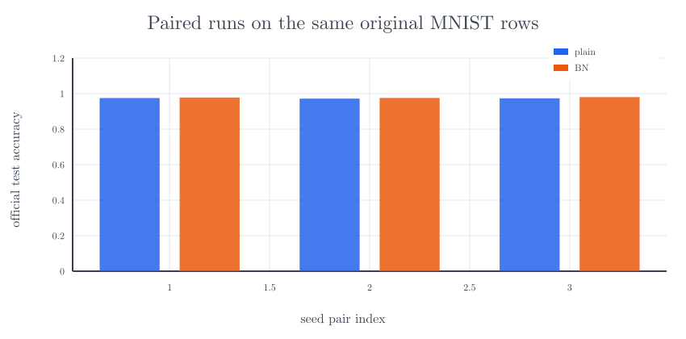
Fresh artifact and held-out checks
The views below are regenerated from the executed programs above. Confusion matrices use the selected checkpoint and original held-out rows. Paired ablations retain each seed and policy separately; they do not pool the same test observations into one artificial sample.
#include <filesystem>
int main() {
std::filesystem::create_directories("build");
std::filesystem::copy_file("build/batch_norm_ablation_learning.svg", "build/export_batch_norm_ablation_learning.svg",
std::filesystem::copy_options::overwrite_existing);
}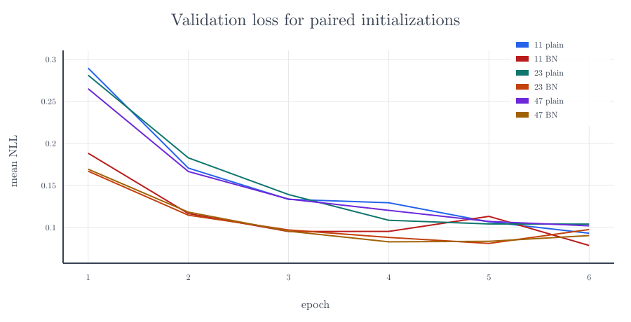
#include <filesystem>
int main() {
std::filesystem::create_directories("build");
std::filesystem::copy_file("build/batch_norm_ablation_architecture_graph.svg", "build/export_batch_norm_ablation_architecture_graph.svg",
std::filesystem::copy_options::overwrite_existing);
}#include <filesystem>
int main() {
std::filesystem::create_directories("build");
std::filesystem::copy_file("build/batch_norm_ablation_architecture_lenet.svg", "build/export_batch_norm_ablation_architecture_lenet.svg",
std::filesystem::copy_options::overwrite_existing);
}#include <filesystem>
int main() {
std::filesystem::create_directories("build");
std::filesystem::copy_file("build/batch_norm_ablation_11_plain_confusion.svg", "build/export_batch_norm_ablation_11_plain_confusion.svg",
std::filesystem::copy_options::overwrite_existing);
}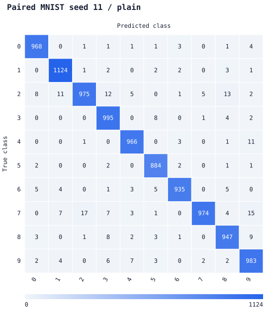
#include <filesystem>
int main() {
std::filesystem::create_directories("build");
std::filesystem::copy_file("build/batch_norm_ablation_11_bn_confusion.svg", "build/export_batch_norm_ablation_11_bn_confusion.svg",
std::filesystem::copy_options::overwrite_existing);
}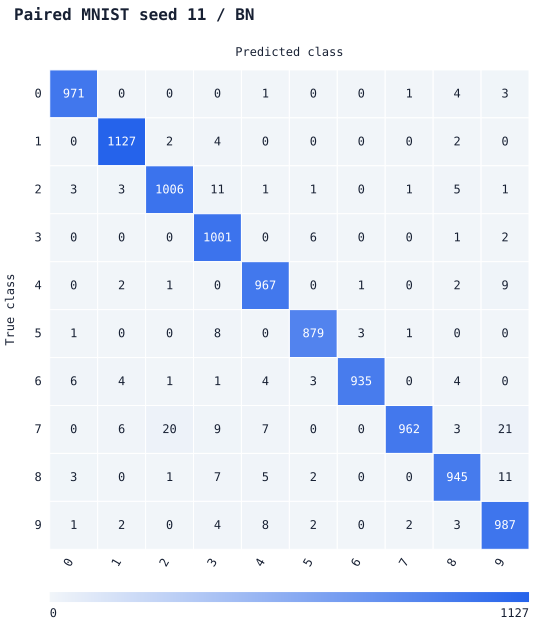
#include <filesystem>
int main() {
std::filesystem::create_directories("build");
std::filesystem::copy_file("build/batch_norm_ablation_23_plain_confusion.svg", "build/export_batch_norm_ablation_23_plain_confusion.svg",
std::filesystem::copy_options::overwrite_existing);
}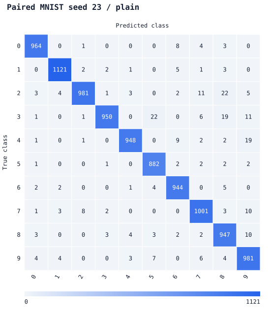
#include <filesystem>
int main() {
std::filesystem::create_directories("build");
std::filesystem::copy_file("build/batch_norm_ablation_23_bn_confusion.svg", "build/export_batch_norm_ablation_23_bn_confusion.svg",
std::filesystem::copy_options::overwrite_existing);
}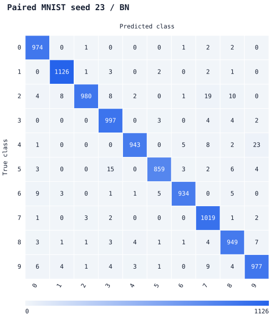
#include <filesystem>
int main() {
std::filesystem::create_directories("build");
std::filesystem::copy_file("build/batch_norm_ablation_47_plain_confusion.svg", "build/export_batch_norm_ablation_47_plain_confusion.svg",
std::filesystem::copy_options::overwrite_existing);
}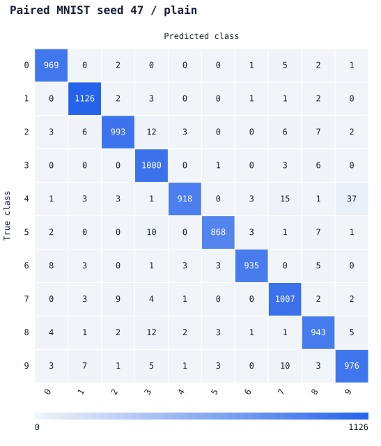
#include <filesystem>
int main() {
std::filesystem::create_directories("build");
std::filesystem::copy_file("build/batch_norm_ablation_47_bn_confusion.svg", "build/export_batch_norm_ablation_47_bn_confusion.svg",
std::filesystem::copy_options::overwrite_existing);
}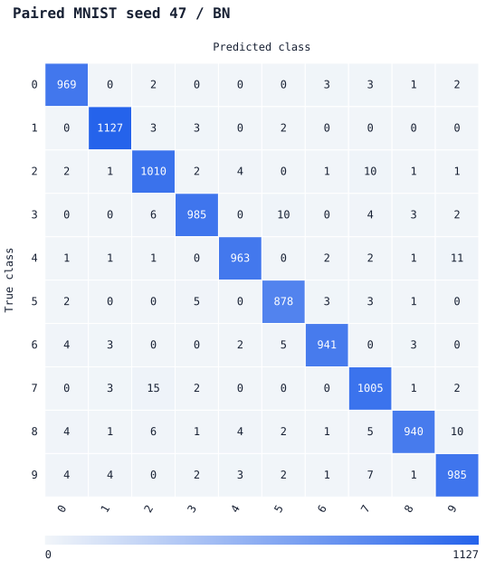
Conclusion
The one-step state update matches its analytic moments. Paired fits expose Adam updates, validation selection and separate moving statistics; inference is independent of batch companions and checkpoint restoration reproduces logits. The paired differences describe these three initializations on this MNIST split.
References
- [Ioffe and Szegedy (2015), Batch Normalization](https://arxiv.org/abs/1502.03167).
- [LeCun et al. (1998), Gradient-Based Learning Applied to Document Recognition](https://doi.org/10.1109/5.726791).
- [MNIST dataset](https://yann.lecun.org/exdb/mnist/).